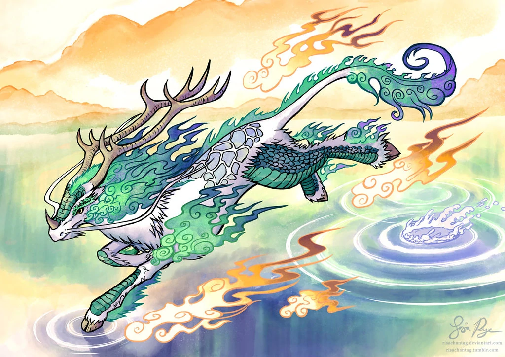
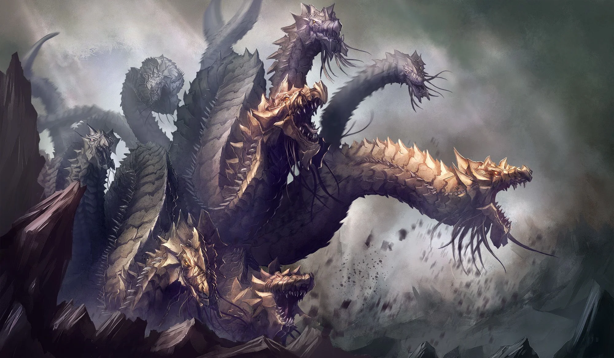

The word drake is sometimes used synonymous to dragon, but it could also mean a specific kind of dragon. There are different opinions on what a drake is: "Any kind of wingless, four-legged dragon" or"A small or young dragon, those are also called dragonlings, wyrmlings or dragonet". These classifications stem from modern fantasy and are not found in classical mythology. Sometimes they overlap, because According to Jennifer Walker, there are two kinds of drakes, fire-drakes and cold-drakes. Fire drakes have a fire breath and fiery colors like red or orange. Cold drakes however breathe frost breath and are white or light blue. This classification is most likely based on Tolkiens works, where fire drakes and cold drakes are a way to classify if a dragon could breathe fire or not. Cold drakes simply couldn't breathe fire, but had no connection to ice. In mythology and language, drake or drac is often the word for 'dragon', as dragon was derived from drakon.
KIRIN The Qilin is a legendary hooved chimerical creature that appears in Chinese mythology, and is said to appear with the imminent arrival or passing of a sage or illustrious ruler. Qilin are a specific type of the lin mythological family of one-horned beasts. The Qilin also appears in the mythologies of other cultures, such as Japanese and Korean mythology, where it is known as the kirin, and Vietnamese mythology, where it is known as the ky lan.
Qilin generally have Chinese dragon-like features: similar heads with antlers, eyes with thick eyelashes, manes that always flow upward, and beards. The body is fully or partially scaled and often shaped like an ox, deer, or horse. They are always shown with cloven hooves. While dragons in China (and thus qilin) are also most commonly depicted as golden, qilin may be of any color or even various colors, and can be depicted as bejeweled or exhibiting a jewel-like brilliance. The qilin is depicted throughout a wide range of Chinese art, sometimes with parts of their bodies on fire. A Qing dynasty qilin-shaped incense burner. Legends tell that qilin have appeared in the garden of the legendary Yellow Emperor and in the capital of Emperor Yao; both events bore testimony to the benevolent nature of the rulers. It has also been told that the birth of the great sage Confucius was foretold by the arrival of a qilin.
HYDRA Hydra, also called the Lernean Hydra, in Greek legend, the offspring of Typhon and Echidna (according to the early Greek poet Hesiod’s Theogony), a gigantic water-snake-like monster with nine heads (the number varies), one of which was immortal. The monster’s haunt was the marshes of Lerna, near Argos, from which he periodically emerged to harry the people and livestock of Lerna. Anyone who attempted to behead the Hydra found that as soon as one head was cut off, two more heads would emerge from the fresh wound. The destruction of the Lernean Hydra became one of the 12 Labours of Heracles. For that and other labours, Heracles enlisted the aid of his nephew Iolaus. As Heracles severed each mortal head, Iolaus was set to the task of cauterizing the fresh wounds so that no new heads would emerge. When only the immortal head remained, Heracles cut it off too and buried it under a heavy rock. Further, he dipped his arrows in the beast’s poisonous blood (or venom) to be able to inflict fatal wounds. According to Sophocles (Trachinian Women), that measure eventually caused his own accidental death at the hands of his wife, Deianeira.
BACK TO MAP